Polunochnoe is an impossible journey into Yalpyng-ma,
the sacred places of ancient Ural deities who left this dimension to
live in its almost exact replica, in which there are no humans.
The Impossible Journey snatches up fragments of Yalpyng-ma,
translating sacred images and songs so that they can be perceived
by human senses.
The project is based on Mansi people’s mythology, Petr Bazhov’s
Ural tales, and my grandma’s stories. it seeks to create a space in
which Others (guardian spirits, ancestral souls, flower hearts, etc.)
could exist in parallel with the human. Created, these worlds are to
be left without an author, but with gaps-portals, for those who can
cross the boundaries of other perceptions
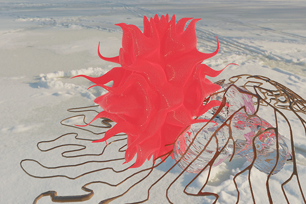
 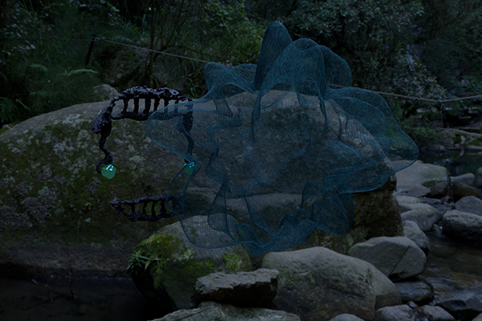
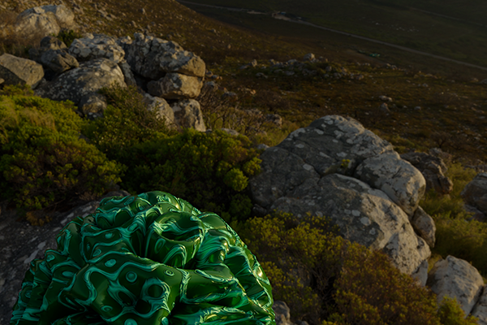
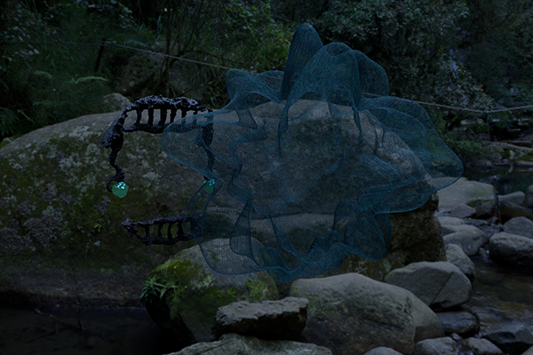
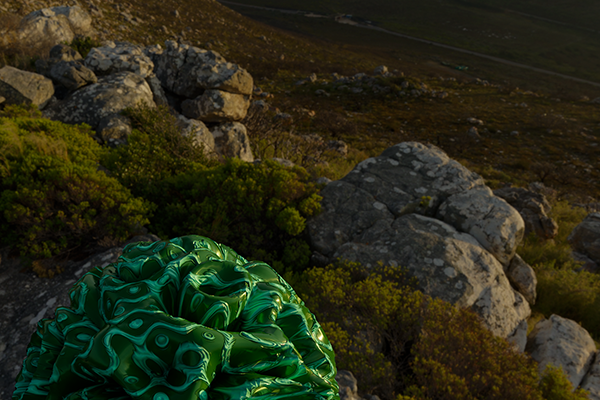
 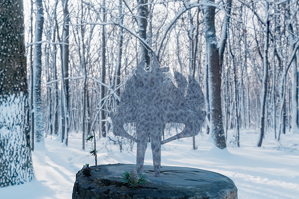
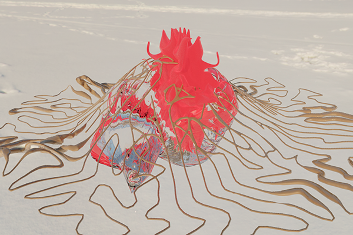
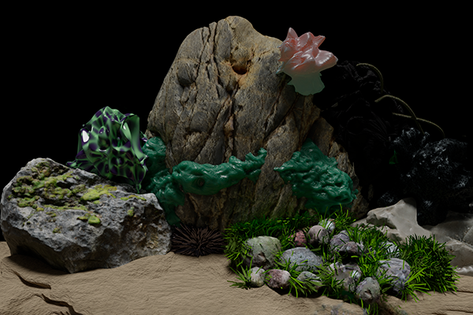
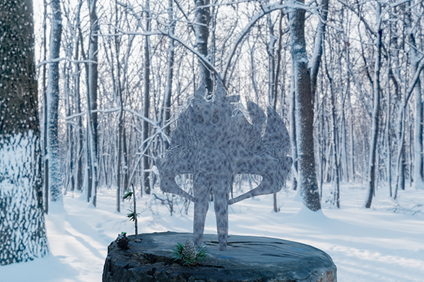
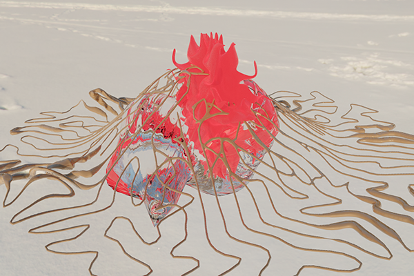
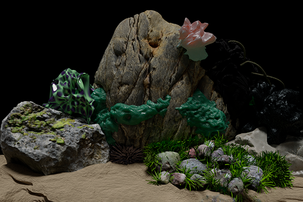
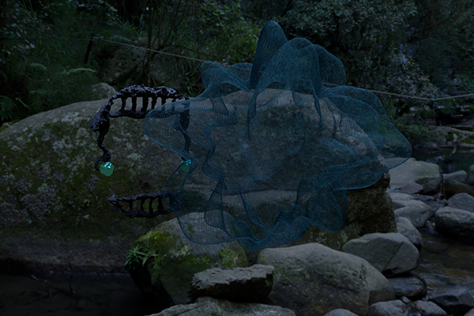
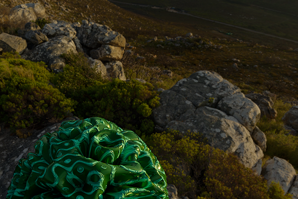
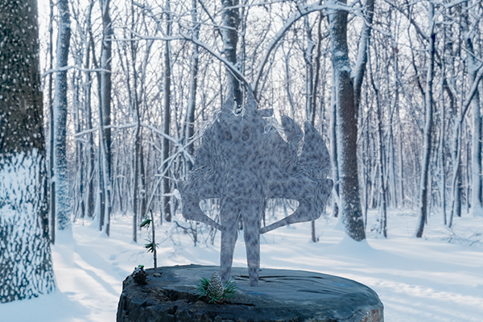
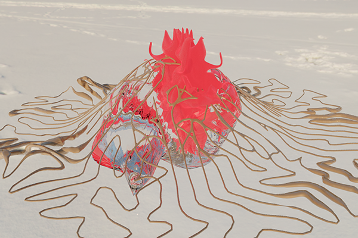
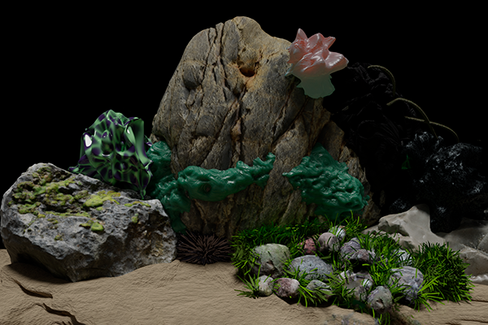